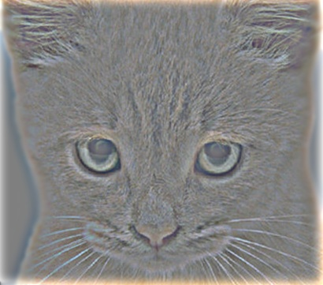
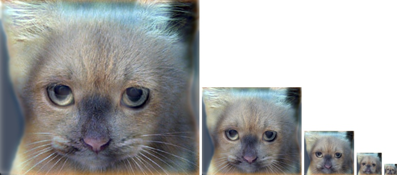

Project 1: Image Filtering and Hybrid Images
The algorithm produced for general image filtering is relatively simple. It runs in O(RowImage*ColImage*RowFilter*ColImage) time. The algorithm iterates through each pixel of the image thus the RowImage*ColImage figure in the big O. At each pixel, it then uses the passed in filter to calculate the new pixel value. To do this, the top left corner of the overlayed portion of the image is found then from there each pixel is iterated over. Each iteration is simply multipling the pixel's value in the current channel by the matching value in the filter matrix. The sum of each of these operations is the new value in the current pixel. There is one big edge case not covered right. What happens when part of the filter is out of the bounds of the image? This is handled in the code by ignoring those pixels within the filter loops. This reduces the load and complexity as no padding or other gymnastics have to occur for the algorithm to proceed when reaching the edges of the image. As far as the algorithm is concerned, this is the same as treating them as pixels with the value zero.
Algoirthm in Action
The hybrid image is produced by combining the low frequencies of one image and the high frequencies of another image. These are produced using a gaussian filter to remove high frequencies. To get a high frequency filtered image, subtract the low frequency image from the original image. These two images simply added together to produce the hybrid image. See below for the process
Hybrid Image Pipeline


|
|

|
|

|
Additional Examples of Hybrid Images